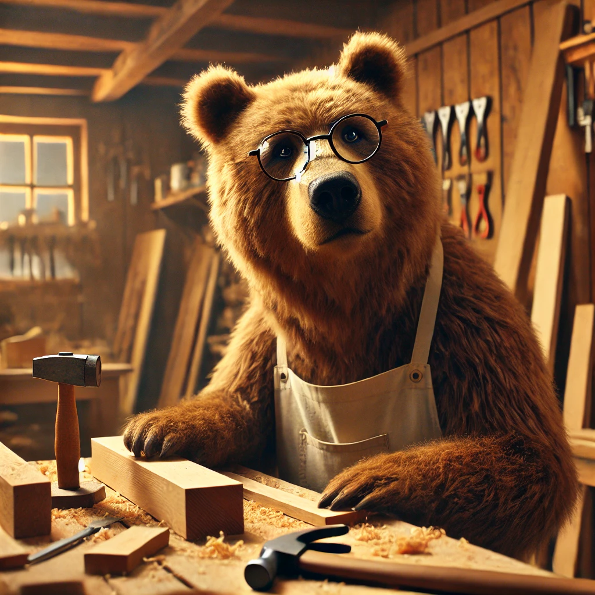

Resume - Jan Renken

Summary
I am a creative bear
Education
- Bachelor of Fine Arts in Industrial Design
Rhode Island School of Design (RISD) | Providence, RI | Graduated: 2014
- Associate Degree in Woodworking Technology
North Bennet Street School | Boston, MA | Graduated: 2012
Work Experience
Senior Woodwork Designer
Oregon, Portland, July 2020
- Designed custom furniture pieces, including chairs, tables, and cabinetry, with a focus on ergonomic solutions and sustainability.
- Managed the end-to-end production process, from initial client consultations to final quality control checks.
- Collaborated with architects and interior designers to integrate wooden elements into large-scale renovation projects.
- Trained a team of junior designers on CNC machining and advanced wood joinery techniques.
Skills
- Advanced CNC machining and CAD modeling (Fusion 360, AutoCAD)
- Fine woodworking techniques (hand joinery, dovetailing, woodturning)
- Furniture design and prototyping
- Sustainable material sourcing and eco-conscious design
- Expert in wood finishing techniques (lacquering, oiling, and varnishing)
- 3D rendering and visual communication (Adobe Illustrator, SketchUp)
Awards, Certifications, or Other Achievements
- Certified Master Woodworker (Woodworkers Guild of America, 2021)
- First Place in the National Woodworking Design Competition (2019)
- Fusion 360 Expert Certification (Autodesk, 2020)
- Green Designer of the Year (Austin Sustainable Design Awards, 2018)
Other
Latest Design Work